Note to non-wiki readers: This documentation is generated from the Eclipse wiki - if you have corrections or additions it would be awesome if you added them in the original wiki page .
The GEF4 Common component provides key concepts and infrastructure to be potentially used by all other GEF4 components. It is internally comprised out of a single Common module.
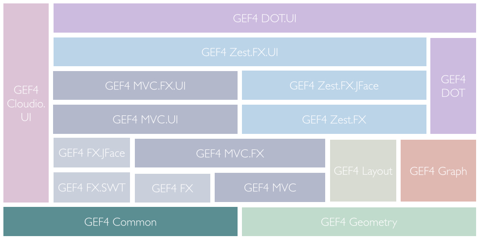
The Common module of GEF4 Common provides basic abstractions and related support classes within the following packages:
The Activate package provides a general abstraction for objects that maintain an active state ( IActivatable) as well as a support-class ( ActivatableSupport) that can be used as a delegate to simply implement IActivatable conferment to its contract.
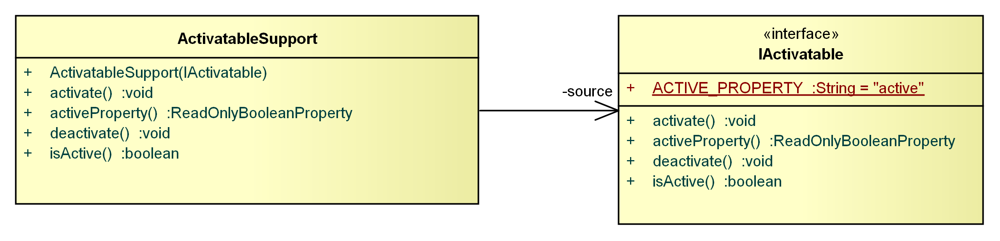
An IActivatable maintains an 'active' state and can be activated and deactivated. The active state of an IActivatable is exposed via an (observable)
javafx.beans.property.ReadOnlyBooleanProperty, so listeners can easily observe the active state.
To enforce that implementers of
IActivatable properly follow the above outlined contract, ActivatableSupport may be used. It does not formally implement the
IActivatable interface but provides implementations for all its methods and can thus be simply used as a delegate, as follows:
public class MyActivatable implements IActivatable {
// create delegate
private ActivatableSupport acs = new ActivatableSupport(this);
public void activate() {
acs.activate();
}
...
}
In case the IActivatable, by which it is used as a delegate, is also IAdaptable, it will ensure that all IActivatable adapters are properly activated/deactivated when the IActivatable is activated or deactivated (it will not activate/deactivate adapters when being registered; this is supported by AdaptableSupport).
The Adapt package provides a modernized interpretation of org.eclipse.core.runtime.IAdaptable.
The motivation behind this extension and a short overview is given in IAdaptable - GEF4's Interpretation of a Classic. In detail, the enhancements provided by Adapt are:
Besides the IAdaptable, IAdaptable.Bound, and AdapterKey abstractions that formalize the modernized adaptable pattern, the package also provides a supporting class ( AdaptableSupport) to implement IAdaptable in compliance with its contract, as well as a standalone implementation ( AdapterStore).
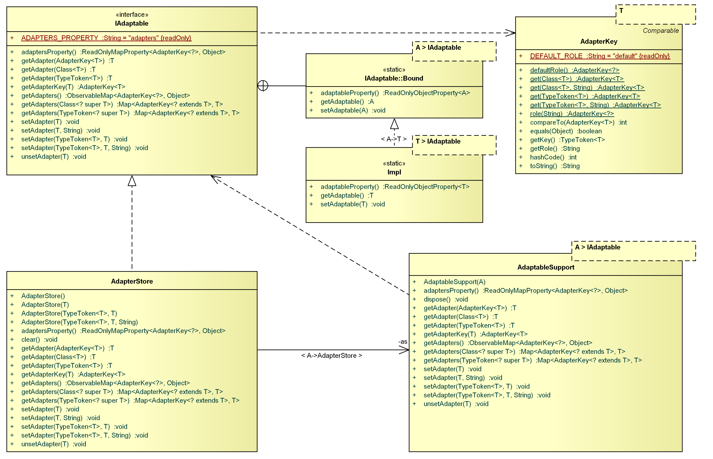
An IAdaptable provides facilities to register adapters and to retrieve them via a combination of a type key (
java.lang.Class or
com.google.common.reflect.TypeToken) and an (optional)
java.lang.String role, which are combined in an AdapterKey. Having the option to use a
com.google.common.reflect.TypeToken instead of a simple
java.lang.Class key, enables the type-safe retrieval of adapters with parameterized types. The combination with an additional (optional) role enables that multiple adapters of the same type may be registered at an IAdaptable.
The 'traditional' getAdapter(Class<T>) method provided by the Eclipse Core Runtime org.eclipse.core.runtime.IAdaptable here is a mere convenience operation that will retrieve the single adapter registered with the respective java.lang.Class key and the default role (or the only adapter registered under the given java.lang.Class key, if there is only one adapter for that type key).
Before retrieving adapters from an IAdaptable, they have to be registered. The registration again includes a role (while a 'default' role is used in case no role is provided) and might require additional information about the actual adapter type by means of a
com.google.common.reflect.TypeToken. The additional type information is required in case it cannot be inferred from the registered adapter instance itself (which is the case for parameterized types).
An adapter can thus now be registered and retrieved in various ways:
// register and retrieve adapter 'a' of raw type 'A' under 'default' role (type info not required)
adaptable.setAdapter(a);
A a = adaptable.getAdapter(A.class);
// register and retrieve adapter 'a' of parameterized type 'A<T>' under 'default' role (type info required)
adaptable.setAdapter(new TypeToken<A<T>>(){}, a);
A<T> a = adaptable.getAdapter(new TypeToken<A<T>>(){});
// register and retrieve adapter 'a' of raw type 'A' under role 'a1' (type info not required)
adaptable.setAdapter(a, "a1");
A a = adaptable.getAdapter(AdapterKey.get(A.class, "a1"));
// register and retrieve adapter 'a' of parameterized type 'A<T>' under role 'a1' (type info required)
adaptable.setAdapter(new TypeToken<A<T>>(){}, a, "a1");
A a = adaptable.getAdapter(AdapterKey.get(new TypeToken<A<T>>(){}, "a1"));
To formalize support for notifying listeners about registration and unregistration of adapters, IAdaptable provides its adapters via an
javafx.collections.ObservableMap and an (unmodifiable)
javafx.beans.property.ReadOnlyMapProperty.
To formalize that an adapter may need to obtain a back reference to an
IAdaptable, the IAdaptable.Bound interface was introduced. If an adapter implements this interface, the adaptable at which the adapter is registered is responsible of providing a back reference to the adapter as follows:
public class MyAdaptable implements IAdaptable {
public <T> void setAdapter(T adapter) {
...
if (adapter instanceof IAdaptable.Bound) {
((IAdaptable.Bound<A>) adapter).setAdaptable(this);
...
}
public <T> void unsetAdapter(T adapter) {
...
if (adapter instanceof IAdaptable.Bound) {
((IAdaptable.Bound<A>) adapter).setAdaptable(null);
}
...
}
...
}
To enforce that implementers of
IAdaptable properly follow the above outlined contract, AdaptableSupport may be used. It does not formally implement the
IAdaptable interface but provides implementations for all its methods and can thus be simply used as a delegate, as follows:
public class MyAdaptable implements IAdaptable {
// create delegate
private AdaptableSupport<MyAdaptable> ads = new AdaptableSupport<MyAdaptable>(this);
public <T> T getAdapter(AdapterKey<T> key){
return ads.getAdapter(key);
}
...
}
In case the IAdaptable, by which it is used as a delegate, is also IActivatable, it will ensure that all IActivatable adapters are properly activated/deactivated when being registered/unregistered dependent on the active state of the adaptable at that moment (it will not activate/deactivate adapters when the adaptable is activated or deactivated; this is supported by ActivatableSupport).
An AdaptableStore is an
IAdaptable implementation that can be used standalone.
The Adapt.Inject package contains Google Guice-based support for injecting adapters into an IAdaptable. That is, if an IAdaptable implementation provides an @InjectAdapters annotation on its <T> setAdapter(TypeToken<T>, T, String) method, and if corresponding adapter (map) bindings qualified with an @AdapterMap annotation are provided within a com.google.inject.Module, adapter instances can automatically be injected into instances of the IAdaptable. It needs to be pointed out that respective adapter (map) bindings are evaluated polymorphically, i.e. a concrete adaptable will also be injected with all adapters that registered for super types of it.
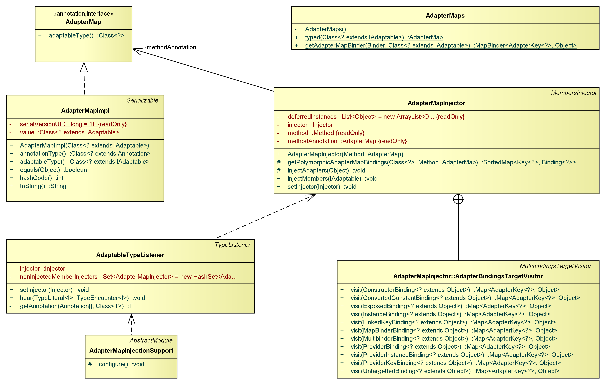
In addition to basic injection support for adapters, the package also provides support for scoping all objects that are injected in the (transitive) context of an IAdaptable by means of a dedicated com.google.inject.Scope ( AdaptableScope).
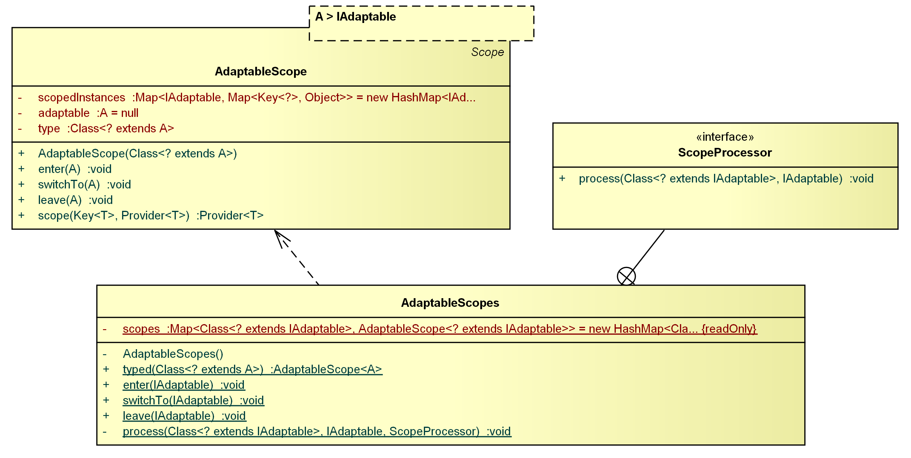
To enable injection of adapters to an
IAdaptable, a specific
com.google.inject.spi.TypeListener (AdaptableTypeListener) needs to be registered in the
com.google.inject.Module. To ensure this is done properly, a respective support
com.google.inject.Module is provided, namely AdapterInjectionSupport, which can easily be integrated into a custom
com.google.inject.Module as follows:
public class MyModule extends AbstractModule {
@Override
protected void configure() {
// register adapter map injection support
install(new AdapterInjectionSupport());
...
}
}
This will ensure that the AdaptableTypeListener is properly registered (and itself injected). The AdaptableTypeListener will register a dedicated
com.google.inject.MembersInjector (AdapterInjector) on all suitable
IAdaptable implementations it encounters.
Specifying the injection point (i.e. the <T> setAdapter(TypeToken<T>, T, String) method within a respective IAdaptable implementation is achieved by adding an @InjectAdapters annotation as follows:
public class MyAdaptable implements IAdaptable {
@InjectAdapters
public <T> void setAdapter(TypeToken<T> adapterType, T adapter, String role) {
...
}
}
Specifying the to be injected adapters is performed by means of map bindings in the com.google.inject.Module, which are qualified with an @AdapterMap annotation. In case the actual type of the to be registered adapter cannot be inferred from the adapter instance itself, or from the respective binding, information about the actual adapter type has to be provided via the AdapterKey used in all bindings. Where the type of an adapter can be inferred from the instance or the binding itself, it may be omitted.
public class MyModule extends AbstractModule {
@Override
protected void configure() {
...
// obtain a map binder to bind adapters for the respective IAdaptable type.
MapBinder<AdapterKey<?>, Object> adapterMapBinder = AdapterMaps.getAdapterMapBinder(binder(), MyAdaptable.class);
// add adapter (map) binding for binding adapter 'a' of raw type 'A' with 'default' role to each MyAdaptable instance;
// type information can be omitted, as it can be inferred from the adapter instance
adapterMapBinder.addBinding(AdapterKey.defaultRole()).toInstance(a);
// add adapter (map) binding for binding an instance of raw type 'A' with role 'r' to each MyAdaptable instance;
// type information can be omitted, as it can be inferred from the binding
adapterMapBinder.addBinding(AdapterKey.role("r").to(A.class);
// add adapter (map) binding for binding adapter 'a' of parameterized type 'A<T>' with 'default' role to each MyAdaptable instance;
// type information is required, as it cannot be inferred from the adapter instance, nor from the binding
adapterMapBinder.addBinding(AdapterKey.get(new TypeToken<A<T>>(){})).toInstance(a);
...
}
}
When adapter map injection is properly enabled in the com.google.inject.Module, all suitable IAdaptable instances that are created through an com.google.inject.Injector, which is aware of the respective com.google.inject.Module, will be injected.
To this extend, the @AdapterMap-bindings can be compared to the Guice
@Named-bindings, only that a
java.lang.Class instead of a
java.lang.String key is used. However, @AdapterMap-bindings are more powerful, as they are evaluated polymorphically. That is, if a binding is specified for a specific
IAdaptable, let's say 'A', it will be evaluated for instances of all subtypes of 'A' as well, as long as they are suitable for injection (i.e. they directly or via inheritance provide a respective method eligible for adapter injection). This is a very powerful mechanism that is used intensively by the
GEF4 MVC component. It allows to register certain adapters already for some abstract base type, so that each concrete sub-type will be injected with a respective adapter instance.
An AdaptableScope is a Guice
com.google.inject.Scope that is bound to an
IAdaptable instance. It can be used to scope the object instances (not limited to adapters) during injection. To enable this, bindings have to be 'scoped' and the scope has to be entered for the respective
IAdaptable instance before injection of adapters is triggered (which is supported best by using the AdaptableScopes support class).
Scoping bindings can simply be performed in a Guice com.google.inject.Module as follows:
public class MyModule extends AbstractModule {
@Override
protected void configure() {
...
// within the context of IAdaptable 'A', reuse a single instance of type 'B'
binder().bind(B.class).in(AdaptableScopes.typed(A.class));
...
}
}
In order for the scoping to work properly, the scope has to be bound to a certain adaptable before performing injection of objects:
// enter scope for IAdaptable 'a1' AdaptableScopes.enter(a1); // all injections are now performed in the context of 'a1' B b1 = injector.getInstance(B.class); // switch scope to IAdaptable 'a2' AdaptableScopes.enter(a2); // all injections are now performed in the context of 'a2' B b2 = injector.getInstance(B.class); // b2 != b1 // switch back context to 'a1' AdaptableScopes.switchTo(a1); B b3 = injector.getInstance(B.class); // b1 == b3
This mechanism is e.g. used by GEF4 MVC to scope the content models, which are adapters on a respective viewer. For instance, within the context of an IViewer, only one selection model instance should be used, no matter where it is injected; if an IBehavior e.g. uses members injection to obtain a reference to the selection model via a field, it should get the instance that is registered at its viewer.
the Attributes package provides abstractions around string-key based (object) properties.
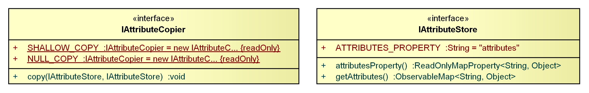
The IAttributeStore is a general abstraction that provides support for storing and retrieving
java.lang.Object attributes via
java.lang.String keys in the form of an (observable) map property.
The IAttributeCopier is a general abstraction for a copier that can transfer/copy attributes from one
IAttributeStore to another. It provides static NULL_COPY and SHALLOW_COPY default copier implementations.
The Beans.Binding package provides binding implementations for Google Guava's com.google.common.collect.Multiset and com.google.common.collect.SetMultimap collections, as well as replacements for JavaFX's (internal) expression helper classes, which are used by the JavaFX property replacement classes provided by Beans.Property.
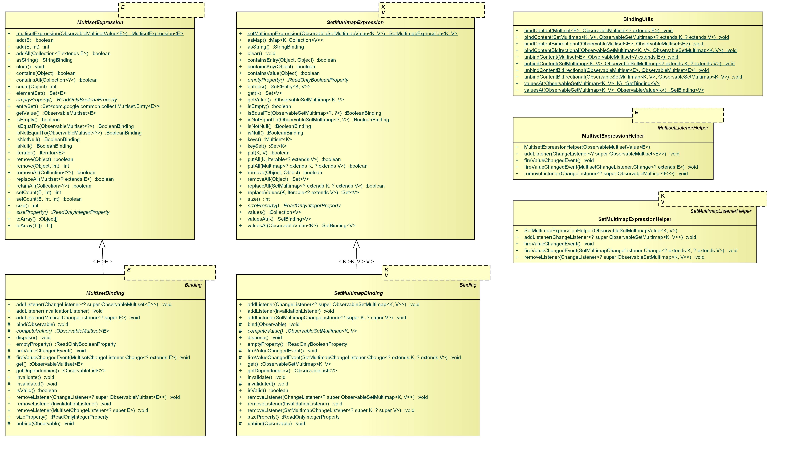
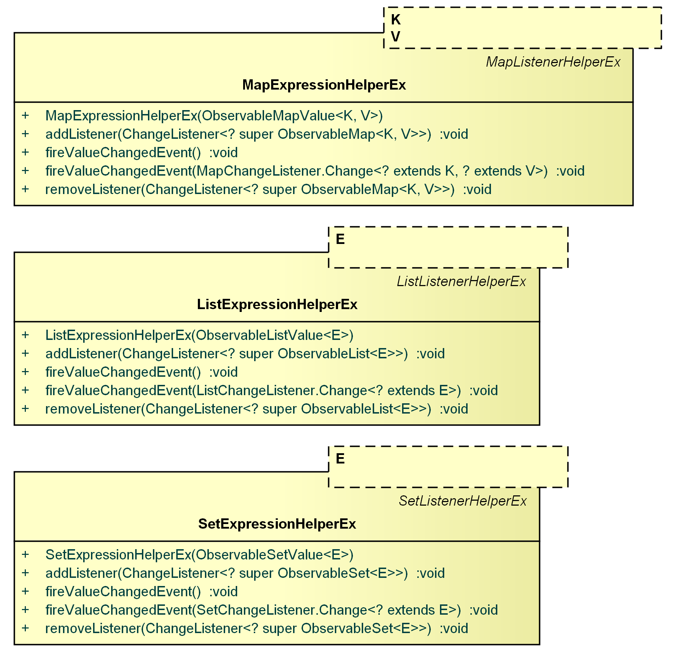
The Beans.Property package provides (observable) property abstractions and implementations for Google Guava's com.google.common.collect.Multiset and com.google.common.collect.SetMultimap collections, as well as replacements for JavaFX's list, set, and map property base classes ( javafx.beans.property.ReadOnlyMapPropertyBase, javafx.beans.property.ReadOnlyListPropertyBase, javafx.beans.property.ReadOnlySetPropertyBase, javafx.beans.property.SimpleMapProperty, javafx.beans.property.SimpleListProperty, javafx.beans.property.SimpleSetProperty).
A good overview about how to use the properties provided by Beans.Property is given in GEF4 Common Collections and Properties - Guava goes FX.
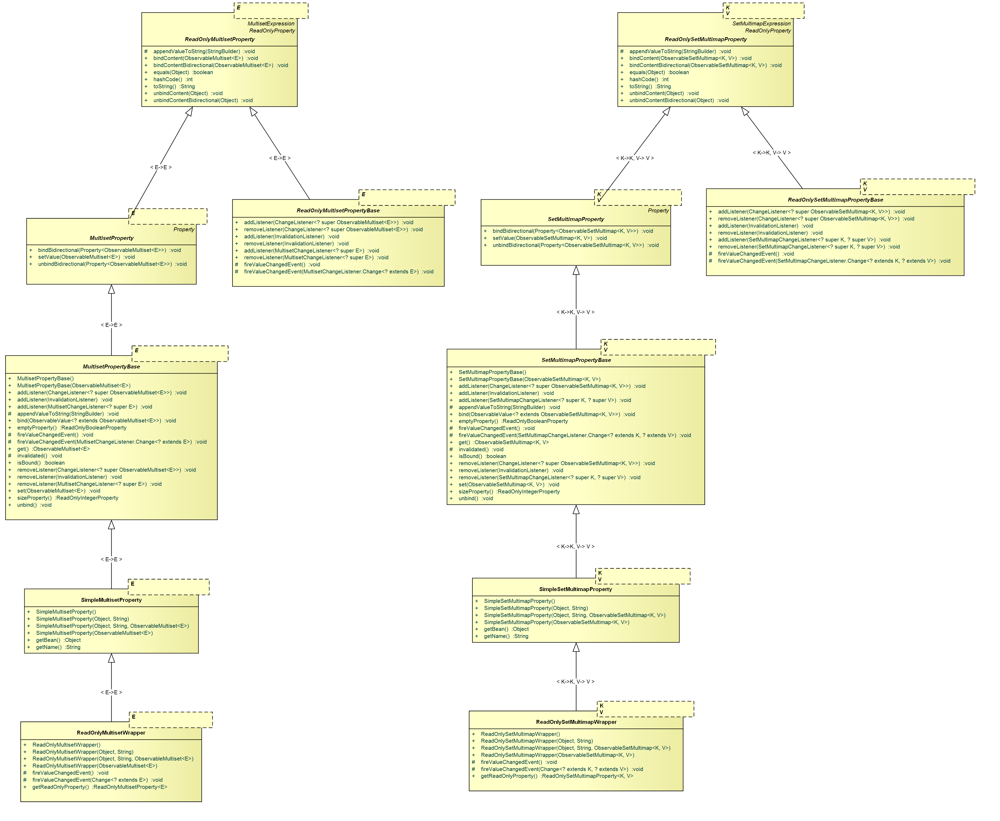
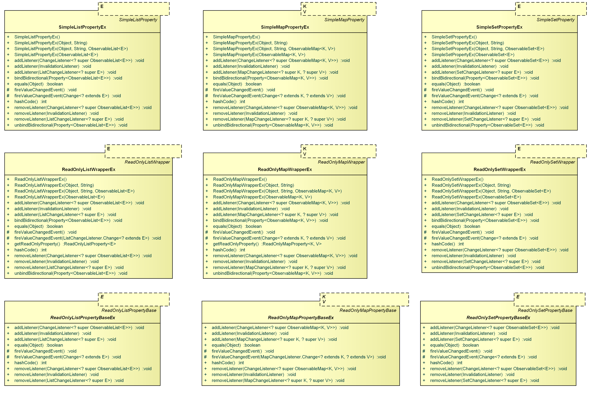
The Beans.Value package provides ObservableValue and WritableValue abstractions related to Google Guava's com.google.common.collect.Multiset and com.google.common.collect.SetMultimap collections. These are implemented by the observable collections and properties provided by Collections and Beans.Property.
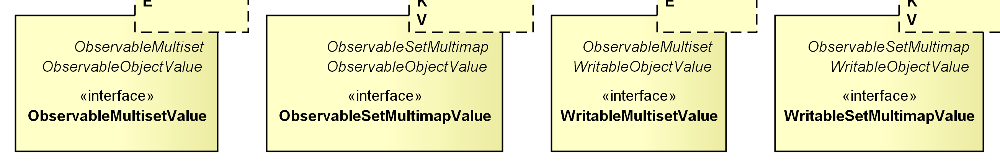
The Collections package provides observable variants of Google Guava's com.google.common.collect.Multiset and com.google.common.collect.SetMultimap collections as well as a utility class via which these observable collection as well replacements for JavaFX's observable collections (that fix some issues) can be instantiated.
A good overview about how to use the collections provided by Collections and some insight about the additions and workarounds for the JavaFX provided collections is given in GEF4 Common Collections and Properties - Guava goes FX.
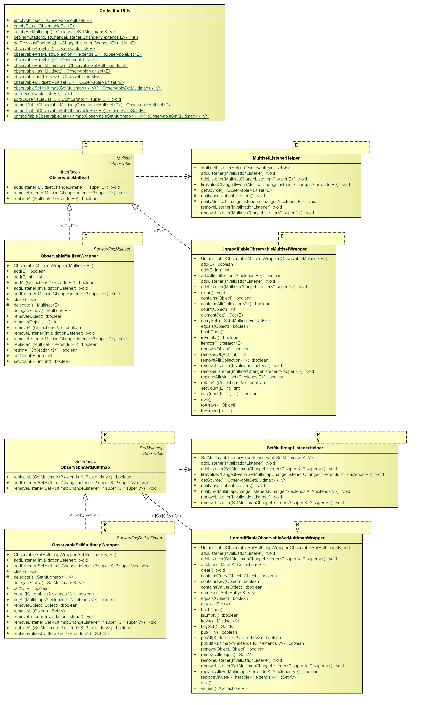
CollectionUtils is a utility class that augments
javafx.collections.FXCollections. It provides static utility methods to create the observable equivalents for
com.google.common.collect.Multiset and
com.google.common.collect.SetMultimap, as well as the replacement classes for the JavaFX collections that are provided.
ObservableMultiset is an observable variant of
Google Guava's
com.google.common.collect.Multiset in the style of a JavaFX observable collection. There are two concrete (internal) implementations, ObservableMultisetWrapper as well as UnmodifiableObservableMultisetWrapper, which should not be accessed directly but can be created using the utility operations provided by
CollectionUtils.
ObservableSetMultimap is an observable variant of
com.google.common.collect.SetMultimap in the style of a JavaFX observable collection. There are two concrete (internal) implementations, ObservableSetMultimapWrapper as well as UnmodifiableObservableSetMultimapWrapper, which should not be accessed directly but can be created using the utility operations provided by
CollectionUtils.
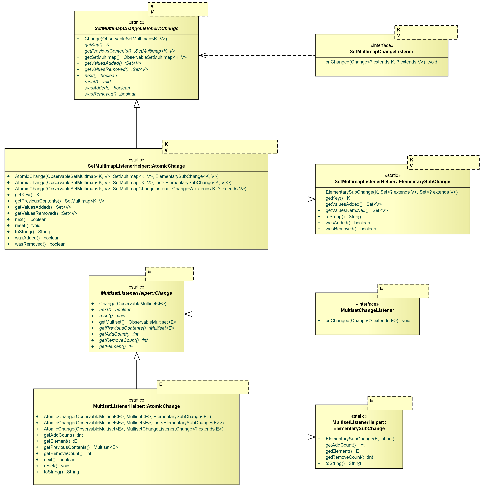
The MultisetListenerHelper and SetMultimapListenerHelper are (internal) delegate classes that are used internally by
ObservableMultiset and [#ObservableSetMultimap, ObservableSetMultimapWrapper, UnmodifiableObservableSetMultimapWrapper |ObservableSetMultimap]], as well as the related properties and bindings within
Beans.Binding and
Beans.Property to maintain and notify registered listeners.
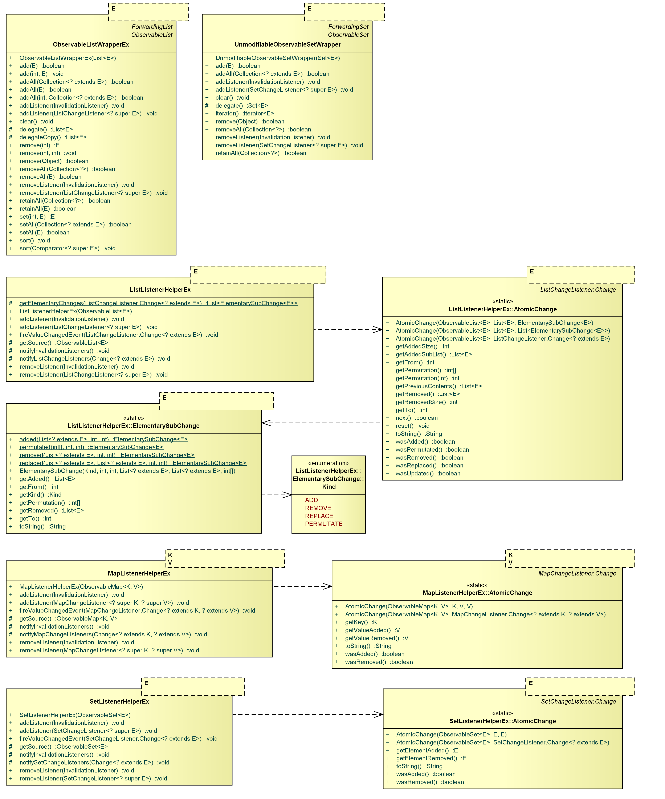
ObservableListWrapperEx is an (internal) replacement class for the ObservableListWrapper returned by
javafx.collections.FXCollections in its utility functions related to observable lists. It can be constructed using respective utility methods provided by
CollectionUtils.
The ListListenerHelperEx, SetListenerHelperEx, and MapListenerHelperEx are (internal) delegate classes that replace the respective delegate classes used internally by the JavaFX implementations provided for
javafx.collections.ObservableList,
javafx.collections.ObservableSet, and
javafx.collections.ObservableMap. They are used by the
ObservableListWrapperEx as well as the replacements provided by
Beans.Binding and
Beans.Property .
The Dispose package provides an abstraction ( IDisposable) for objects that need to be notified when being disposed.
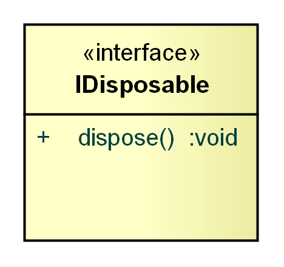
An IDisposable needs to be disposed. While the IDisposable encapsulates the necessary steps that have to be performed when being disposed, the initiation of the disposal is left to its clients.
The Reflect package provides a utility class ( ReflectionUtils) that offers convenience operations in the context of Java reflection.
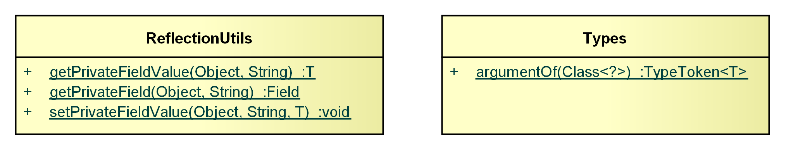
The ReflectionUtils utilities provide support for getting and setting values of private fields by means of Java reflection.